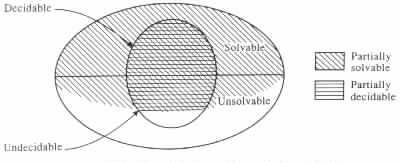

Partial Solvability and Solvability
Problems concerning Programs
Problems concerning Grammars
The first two sections of this chapter treated different aspects of information. The third section considered programs. The purpose of the rest of this chapter is to deal with the motivation for writing programs for manipulating information, that is, with problems.
Each problem K is a pair consisting of a set and a question, where the question can be applied to each element in the set. The set is called the domain of the problem, and its elements are called the instances of the problem.
Example 1.4.1 Consider the problem K1 defined by the following domain and question.
For the instance <27, 8> the problem asks what is the integer part of 27 divided by 8.
Similarly, for the instance <0, 0> the problem asks what is the integer part of 0 divided by
0.
An answer to the question that the problem K poses for a given instance is said to be a solution for the problem at the given instance. The relation induced by the problem, denoted R(K), is the set { (x, y) | x is an instance of the problem, and y is a solution for the problem at x }. The problem is said to be a decision problem if for each instance the problem has either a yes or a no solution.
Example 1.4.2 Consider the problem K1 in Example 1.4.1. The problem has the solution 3 at instance <27, 8>, and an undefined solution at instance <0, 0>. K1 induces the relation R(K1) = {(<0, 1>, 0), (<0, 2>, 0), (<1, 1>, 1), (<0, 3>, 0), (<1, 2>, 0), (<2, 1>, 2), (<0, 3>, 0), ¼ }.
The problem K1 is not a decision problem. But the problem K2 defined by the following pair is.
Partial Solvability and Solvability
A program P is said to partially solve a given problem K if it provides the answer for each instance of the problem, that is, if R(P) = R(K). If, in addition, all the computations of the program are halting computations, then the program is said to solve the problem.
Example 1.4.3 Consider the program P1 in Figure 1.4.1(a). The domain of the variables is assumed to equal the set of natural numbers. The program partially solves the problem K1 of Example 1.4.1.
On input "27, 8" the program halts in an accepting configuration with the answer 3 in the output. On input "0, 0" the program never halts, and so the program has undefined output on such an input. On input "27" and input "27, 8, 2" the program halts in rejecting configurations and does not define an output.
The program P1 does not solve K1 because it does not halt when the input value for b
is 0. P1 can be modified to a program P that solves K1 by letting P check for a 0
assignment to b.
A program is said to partially decide a problem if the following two conditions are satisfied.
Example 1.4.4
It is meaningless to talk about the partial decidability or decidability of the problem K1 of
Example 1.4.1 by a program, because the problem is not a decision problem.
On the other hand, the problem K2 of Example 1.4.2 is a decision problem. The
latter problem is partially decidable by the program P2 in Figure 1.4.1(b).
The main difference between a program P1 that partially solves (partially decides) a problem, and a program P2 that solves (decides) the same problem, is that P1 might reject an input by a nonhalting computation, whereas P2 can reject the input only by a halting computation. (Recall that on an input that is accepted by a program, the program has only accepting computations, and all these computations are halting computations. But on an input that is not accepted the program might have more than one computation, of which some may never halt.)
The notions of partial solvability, solvability, partial decidability, and decidability of a problem by a program can be intuitively generalized in a straightforward manner by considering effective (i.e., strictly mechanical) procedures instead of programs. However, formalizing the generalizations requires that the intuitive notion of effective procedure be formalized. In any case, under such intuitively understood generalizations a problem is said to be partially solvable, solvable, partially decidable, and decidable if it can be partially solved, solved, partially decided, and decided by an effective procedure, respectively.
In what follows effective procedures will also be called algorithms .
Example 1.4.5
The program P1 of Example 1.4.3 describes how the problem K1 of Example 1.4.1 can be
solved. The program P2 of Example 1.4.4 describes how the problem K2 of Example 1.4.2
can be solved.
A problem is said to be unsolvable if no algorithm can solve it. The problem is said to be undecidable if it is a decision problem and no algorithm can decide it. The relationship between the different classes of problems is illustrated in the Venn diagram of Figure 1.4.2.
|

|
It should be noted that an unsolvable problem might be partially solvable by an algorithm that makes an exhaustive search for a solution. In such a case the solution is eventually found whenever it is defined, but the search might continue forever whenever the solution is undefined. Similarly, an undecidable problem might also be partially decidable by an algorithm that makes an exhaustive search. However, here the solution is eventually found whenever it has the value yes, but the search might continue forever whenever it has the value no.
Example 1.4.6 The empty-word membership problem for grammars is the problem consisting of the following domain and question.
For the grammar G = <N, S, P, S>, whose production rules are listed below, the algorithm will proceed in the following manner.
The algorithm will start by determining the set of all the derivations Y1 = {S Þ aBS, S Þ Ba} of length n = 1. After determining that none of the derivations in Y1 provides the empty string e, the algorithm determines the set of all the derivations Y2 = {S Þ aBS Þ aBaBS, S Þ aBS Þ aBBa, S Þ aBS Þ SBS, S Þ aBS, S Þ a} of length n = 2. Then the algorithm continues by determining the set Y3 of all the derivations of length 3, the set Y4 of all the derivations of length 4, and so forth. The algorithm stops (with the answer yes) when, and only when, it finds a set Yn of derivations of length n that includes a derivation for e. Such a set Yn exists for n = 5 because of the derivation S Þ aBS Þ SBS Þ BaBS Þ BSBS Þ BS Þ e.
On the other hand, for the grammar G = <N, S, P, S>, whose production rules are listed below, the algorithm never stops.

The unsolvability of a problem does not mean that a solution cannot be found at some of its instances. It just means that no algorithm can uniformly find a solution for every given instance. Consequently, an unsolvable problem might have simplified versions that are solvable. The simplifications can be in the question being asked and in the domain being considered.
Example 1.4.7 The empty-word membership problem for Type 1 grammars is the problem consisting of the following domain and question.
A function f is said to be computable (respectively, partially computable, noncomputable ) if the problem defined by the following domain and question is solvable (respectively, partially solvable, unsolvable).
Although programs are written to solve problems, there are also interesting problems that are concerned with programs. The following are some examples of such decision problems.
Example 1.4.8
The two programs P1 and P of Example 1.4.3 are equivalent, but only P2 halts on all
inputs.
The nonuniform halting problem, the unambiguity problem, the inequivalence problem, and so forth are defined similarly for programs as the uniform halting problem, the ambiguity problem, the equivalence problem, and so forth, respectively. The only difference is that the questions are phrased so that the solutions to the new problems are the complementation of the old ones, that is, yes becomes no and no becomes yes.
It turns out that nontrivial questions about programs are difficult, if not impossible, to answer. It is natural to expect these problems to become easier when the programs under consideration are "appropriately" restricted. The extent to which the programs have to be restricted, as well as the loss in their expressibility power, and the increase in the resources they require due to such restrictions, are interesting questions on their own.
Some of the problems concerned with programs can in a similar way be defined also for grammars. The following are some examples of such problems.